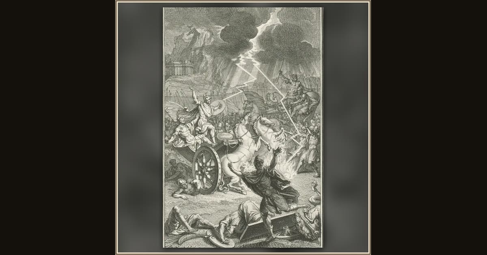

Het gevecht hervat (The fight resumes)
workshop of Bernard Picart, after Bernard Picart · 1710 · rijksmuseum
Lightning from Zeus strikes the ground in flames before Diomedes' chariot, and the horses rear in terror as Nestor's charge toward Hector is stopped (8.133–136) Explore its place in Homer's Iliad, Book VIII, line 133.